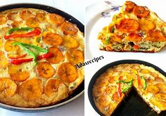
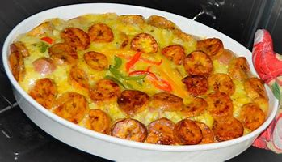

Dezi's Recipe: PLANTAIN FRITTATA RECIPE

Plantain frittata is one of the easiest meals anyone can have for breakfast. For most people,morning isn't a time to drag their feet over breakfast. They already have their eyes on the road to work or places of business.
Plantain frittata is packed with goodness, great for children and adults. Some refer to it as Nigerian Pizza because of the way it comes out.
Plantain Frittata Recipe:

Plantain frittata recipe is easy . The result is one of those foods you need to set you well on your way to your place of work. Or even for your kids to school.
Ingredients;
- 3 plantains (very ripe)
- 7 eggs
- 1 large Plum Tomato(chopped)
- 3 clove garlic(minced)
- half cup of onions(chopped)
- 1 green bell pepper(chopped)
- 2 tablespoons oil
- One and half cup chopped sausages
- Oil for deep frying the plaintain
- One-quarter ground pepper(black&red)
- 2 maggi cubes
- Half teaspoon oil for greasing the plate
- Salt
DETAILED DIRECTIONS ON HOW TO PREPARE NIGERIAN PIZZA;
If you're looking for a great way to step up your breakfast game, making plantain ans eggs this way is a game changer.
Plantain frittata is loaded with veggies and sausages. It's fillings packed full with flavor.
This recipe is about to become a favourite of your. Ye!
- First, peel the plantain and cut into slices. Don't slice the plantain too thick. Heat oil and then gently place the sliced plantain one by one. Fry for two minutes and then place the fried plantains on a paper towel.
This will absorb oil from the plantains.
- Put two tablespoons of oil in a frying pan and heat up to medium heat. Add your onions and garlic and fry until it gives off an aroma.
- Add your chopped tomatoes and cook for two minutes. Then add the sausage and stir for another two minutes. Add bell peppers and salt, followed by black pepper. Stir for two minutes and turn off the heat.
- Crack your eggs into a bowl. Add Maggi and sausage bell pepper and beat.
- Rub in one teaspoon of oil into the pie plate. Pour in the egg and start arranging the plantains on top of the egg. Then put the pie plate into an oven and bake for at least 35 minutes. If you do not have an oven, you can use a non-stick frying pan or a quality stainless steel pan. This is because any other pot might make it burn too fast and break.
Ripe plantain is better in a plantain frittata. This is because ripe plantain is soft and easy to chew in the frittata. Also, it fries faster and feels closer to a dish of plantain and eggs. However, an unripe plantain will be chewy, hard and not quite enjoyable.